سلسلات السائق
37 نصيحة.
1

يجب على السائق أن يرتاح مدّة 15 دقيقة بعد كل ساعتين من السياقة. في هذه الحالة عندما أبدأ بالإحساس بالتّعب فمن الأفضل أن أقوم بالوقوف والاستراحة. لأنني لو قمت بالزيادة في السعة وأنا متعب فهذا سوف يزيد من فرصة وقوع حادثة وأيضا الإنقاص من السرعة ليس حل لأنني أحس بالتّعب ويجب عليّ الوقوف لكي اكون في كامل قوايا الجسدية والعقلانية للسّياقة.
2
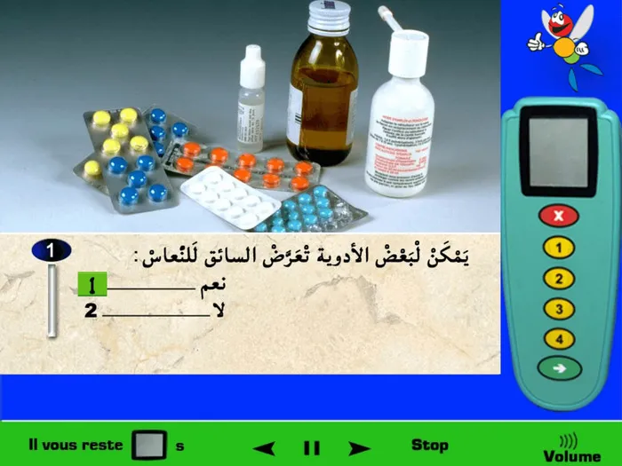
بطبيعة الحال توجد بعض الأدوية التي تحتوي على بعض المركّبات التي تؤدي للإحساس بالنّوم. لذلك يجب أن يقوم السائق دائما بقراءة ورقة الأدوية لكي يتأكد قبل تناول الدواء ويقوم بالسّياقة.
3
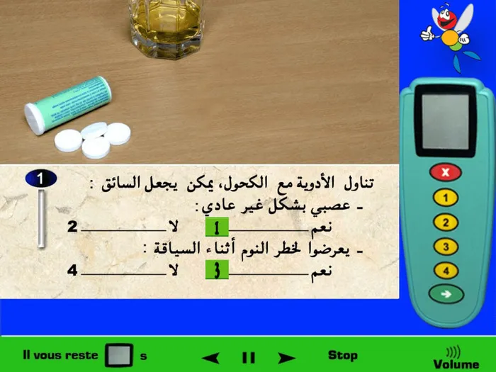
تناول الأدوية مع الكحول يمكن أن يؤدي لنتائج وخيمة دائما، لانه يمكن ان يؤدي تناول الأدوية مع الكحول إلى جعل الشخص عصبي وأيضا إلى الشّعور بالنّوم.
4
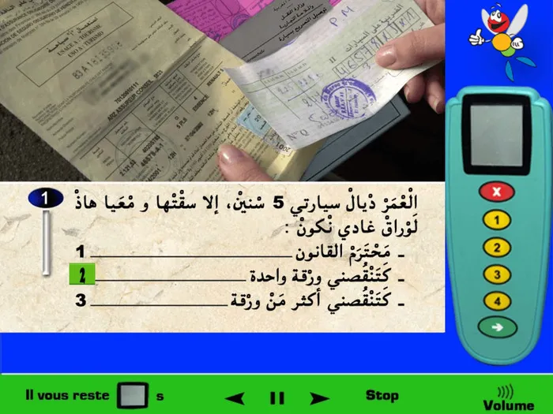
في الصورة تظهر الوثائق التالية: الضريبة، شهادة التامين، الورقة الرّمادية للسيّارة ورخصة السّياقة. لكن بما أن السيّارة الان عمرها 5 سنوات فنحتاج إلى الوثيقة رقم 5 وهي شهادة الفحص التقني. إذن في هذه الحالة تنقصني ورقة واحدة وهي شهادة الفحص التّقني.
5
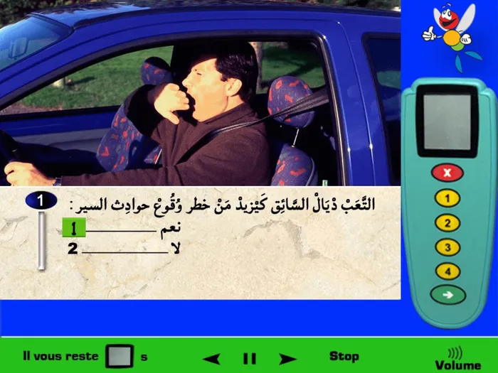
التّعب والإرهاق يسبب عدم تركيز السائق أثناء السّياقة، وبالتالي يزيد من خطر وقوع حوادث السّير.
6
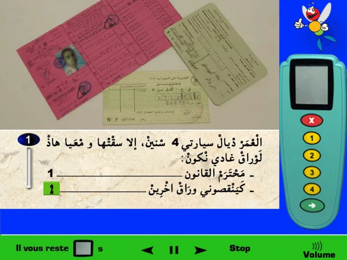
بما أن السّيارة لم يصل عمرها إلى 5 سنوات فهي تحتاج إلى 4 وثائق وهي : الضريبة، الورقة الرّمادية للسيّارة ورخصة السّياقة و شهادة التأمين. في الصورة تظهر الضّريبة والورقة الرّمادية للسّيارة رخصة السّياقة. إذن بقيت لنا شهادة التأمين (l’assurance).
7
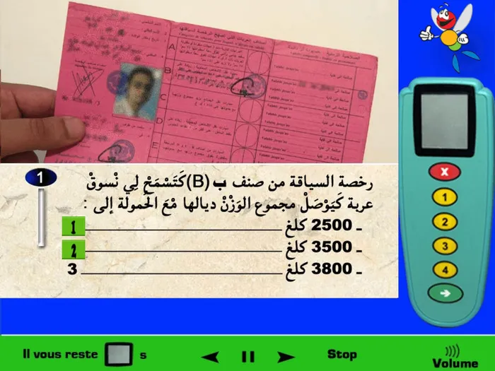
رخصة السّياقة من صنف ب (B) تسمح لي بسياقة عربة يصل مجموع حمولتها إلى 3500 كلغ كحد أقصى، يعني عندما يكون وزن العربة مع الحمولة يساوي أو يقل عن 3500 كلغ يمكنني سياقتها.
8
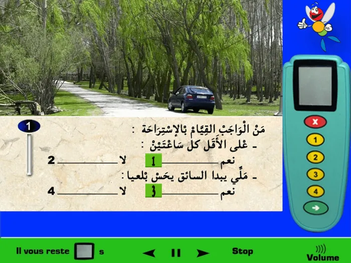
يوصى بأخذ استراحة مدّتها 15 دقيقة كلّما قمت بالسّياقة لساعتين متواصلتين. وأيضا كلّما شَعُرَ السائق بالتّعب فيجب عليه أخد استراحة. لأن التّعب من أسباب وقوع حوادث السّير.
9
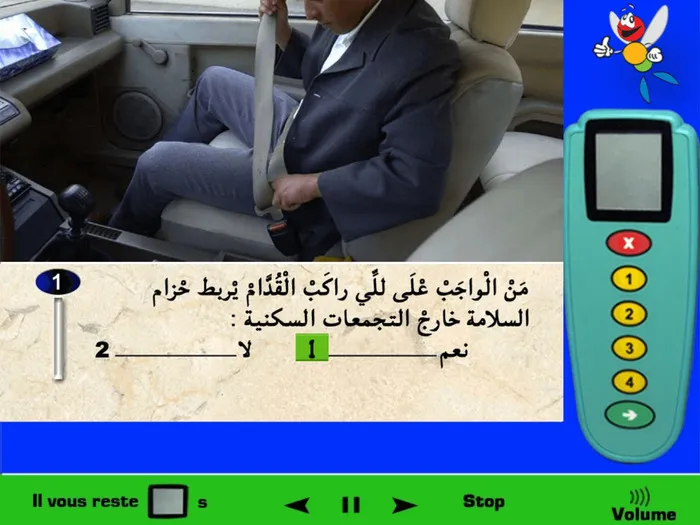
حزام السّلامة بالنسبة للرّاكب الذي يجلس قرب السائق فهو إجباري داخل وخارج التجمّعات السّكنية. (الراكبون في الخلف يقومون بوضع حزام السّلامة فقط خارج التجمّعات السّكنية).
10
![في مدوّنة السّير الجديدة فلم يعد إجباري إلصاق ملصق الضّريبة على السيّارة على الزجاج الأمامي للسيّارة. (لأنه في الماضي كانت تؤدى الضّريبة على السيّارة فقط في دار الضّريبة وكان إلزامي إلصاق الضّريبة على الزجاج الأمامي للسيّارة، لكن الان يمكن تأديتها في البنوك أو مكاتب تسهيلات وسوف يحصل السائق فقط على وصل بأنه قام بالدفع ويجب على الساّئق الاحتفاظ به مع أوراق السيّارة). لكن في الامتحان لم يقوموا بتحديث الأسئلة ومازال هذا السؤال قديم ويجب الإجابة عليه كما لو أن الضّريبة على السيّارة مازالت تؤدى فقط في دار الضّريبة ويجب إلصاق الضريبة على زجاج السيّارة و أيظا الإحتفاظ بها مع الأوراق الأخرى للسيارة). الجواب الصحيح 1 و 2..](../media/tips/10/10.webp)
في مدوّنة السّير الجديدة فلم يعد إجباري إلصاق ملصق الضّريبة على السيّارة على الزجاج الأمامي للسيّارة. (لأنه في الماضي كانت تؤدى الضّريبة على السيّارة فقط في دار الضّريبة وكان إلزامي إلصاق الضّريبة على الزجاج الأمامي للسيّارة، لكن الان يمكن تأديتها في البنوك أو مكاتب تسهيلات وسوف يحصل السائق فقط على وصل بأنه قام بالدفع ويجب على الساّئق الاحتفاظ به مع أوراق السيّارة). لكن في الامتحان لم يقوموا بتحديث الأسئلة ومازال هذا السؤال قديم ويجب الإجابة عليه كما لو أن الضّريبة على السيّارة مازالت تؤدى فقط في دار الضّريبة ويجب إلصاق الضريبة على زجاج السيّارة و أيظا الإحتفاظ بها مع الأوراق الأخرى للسيارة). الجواب الصحيح 1 و 2..
11
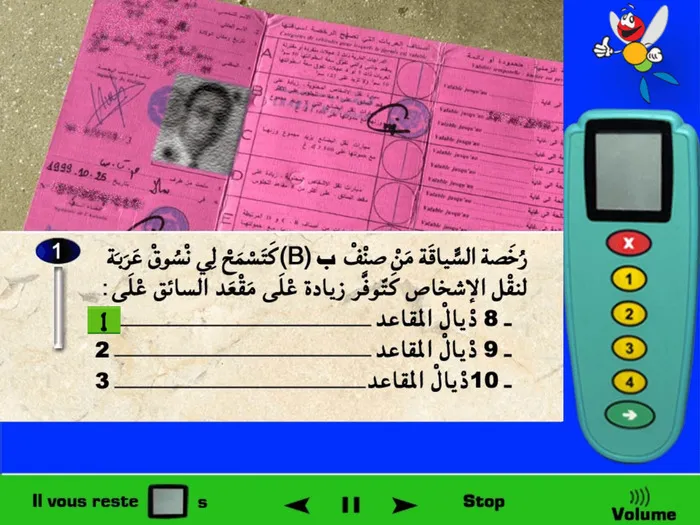
رخصة السّياقة من صنف ب (B) تسمح للسائق بسياقة عربة لنقل الأشخاص بعدد مقاعد هو 8 مقاعد، إضافة للسائق.
12
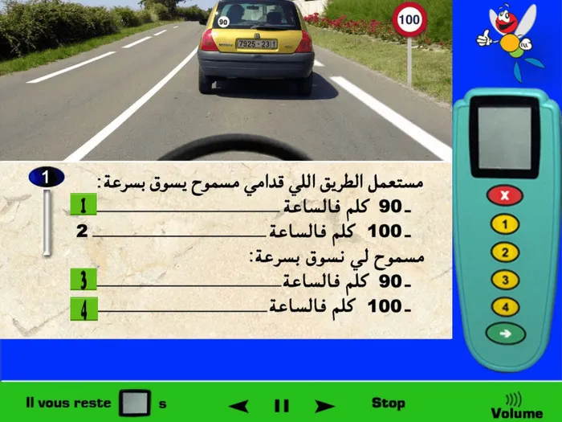
لدينا علامة تحديد السّرعة في 100 كلم في الساعة، يعني يمكنني السّير بأي سرعة دون أن أتجاوز سرعة 100 كلم في الساعة، إذن مسموح لي بالسّياقة ب 90 كلم في الساعة وأيضا يمكنني السّياقة ب 100 كلم في الساعة، بالنسبة للسائق الذي أمامي فيمكنه السّير بسرعة قصوى محدودة في 90 كلم في الساعة لأنه في الفترة الاختبارية وهذا واضح من خلال ملصق (90 كلم في الساعة خلف السيّارة).
13
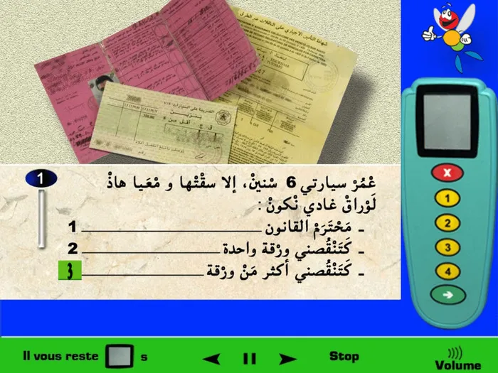
عندما يصل عمر السيّارة إلى 5 سنوات أو أكثر فهي تحتاج إلى 5 وثائق وهي: الضريبة، الورقة الرّمادية للسيّارة ورخصة السّياقة، شهادة التأمين و شهادة الفحص التّقني. في الصورة تظهر الوثائق التالية: الضريبة، شهادة التامين، الورقة الرّمادية للسيّارة ورخصة السّياقة. في الصورة توجد رخصة السّياقة و الضريبة على السيّارة و شهادة التأمين. إذن تنقصني أكثر من ورقة وهي الورقة الرّمادية للسيّارة و الفحص التّقني.
14
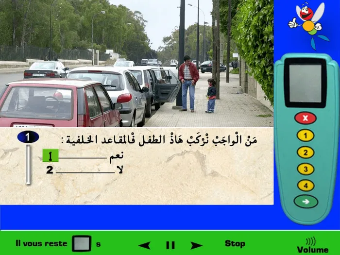
الأطفال الذين تقل أعمارهم عن 10 سنوات , يجب وضعهم في المقاعد الخلفية و تثبيتهم بحزام الأمن وفي حالة عدم وجود حزام الأمن يجب مراقبتهم بعدم فتح الأبواب و النوافذ.
15
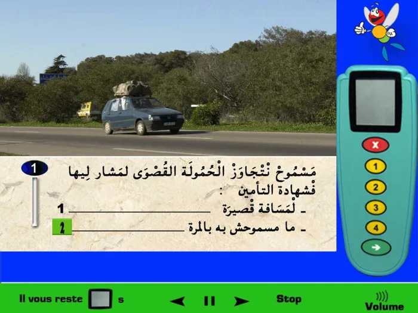
لا يُسمح أبدا بتجاوز الحمولة المشار إليها في شهادة التأمين.
16
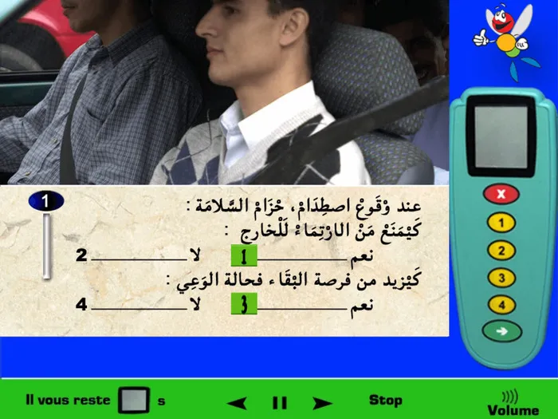
في حالة وقوع حادثة طرقية فإن حزام السّلامة يحمي الرّاكب و يمنعه من الارتماء خارج العربة، وبطبيعة الحال بما أنه سوف يمنع السائق من الارتماء خارج العربة ويقوم بتثبيت السائق في مكانه فهذا سوف يمنعه من فقدان وعيه، أي أن حزام السّلامة سوف يزيد من فرصة بقاء السائق في حالة وعي.
17
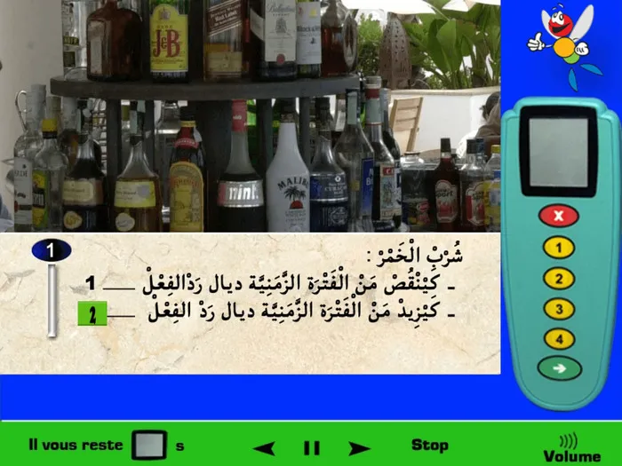
شرب الخمر يجعل السّائق بطيئ في اتّخاد القرارات، وهدا يعني الزيادة في وقت رد الفعل.
18
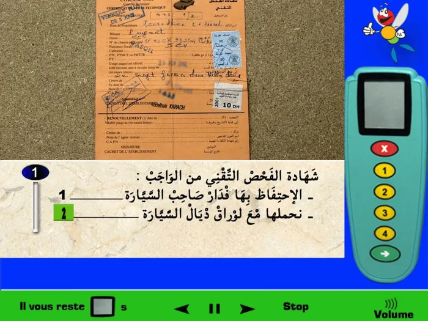
جميع أوراق السيّارة لا يمكن تركها في المنزل، يجب حملها في السيّارة وتقديمها عندما تكون هنالك مراقبة طرقية.
19
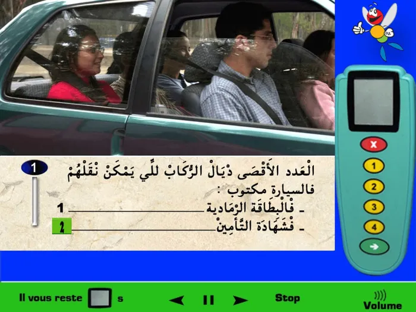
العدد الأقصى أو بتعبير أخر عدد المقاعد المسموح بها في السيّارة فتوجد في شهادة التأمين. لأن شركة التأمين هي التي تُرَخِّصْ عدد المقاعد المسموح بها في السيّارة أي في شهادة التأمين.
20
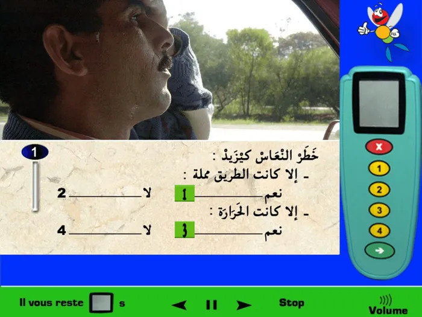
إذا كانت الطّريق مملة أي حركة السّير كثيفة والسائق يسير ويقف يسير ويقف فسوف يمل ويبدا بالإحساس بالنّوم. بالنسبة للحرارة فأيضا هي سبب من أسباب الشّعور بالنّوم، فمثلا عندما تكون درجة الحرارة عالية وقام السائق بإستعمال المكيّف في السيّارة فسوف يشعر بارتياح وبالتالي الشّعور بالنوم.
21
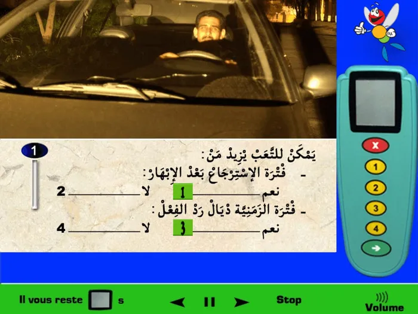
بالنسبة للتّعب فهو يزيد من وقت رد الفعل لأن السائق عندما يشعر بالتّعب فهذا سوف يجعله بطيئ في اتّخاد القرارات أثناء السّيارة أي الزّيادة في وقت رد الفعل. بالنسبة للانبهار فيقصد به عندما يستعمل سائق اخر أضواء الطّريق على السائق. والفترة لكي يسترجع السائق الرؤية العادية بعد الانبهار أثناء السّير تكون أطول إذا كان السائق يشعر بالتّعب.
22
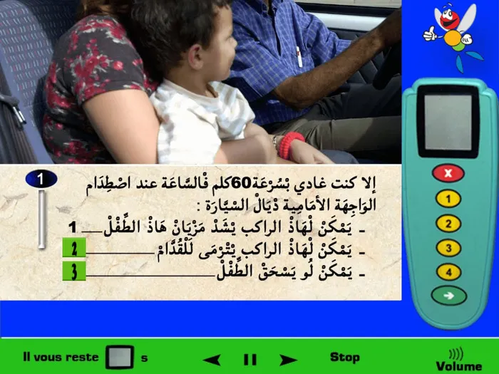
مكان الأطفال الصغّار في المقاعد الخلفية للسيّارة، وهذه الوضعية التي توجد في الصورة فهي ممنوعة وخاطئة. عند حدوث اصطدام وفي هذه الوضعية فالطفل الصّغير يمكن أن يرتمي للأمام بسبب الاصطدام وأيضا هذا الاصطدام يمكن أن يسحق الطفل خصوصا وانه يوجد راكب من خلف.
23
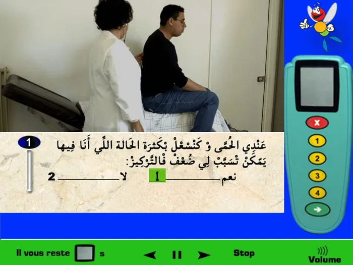
السائق عندما يكون مريض فهذا سوف يسبب له قلّة التّركيز أثناء السّياقة.
24
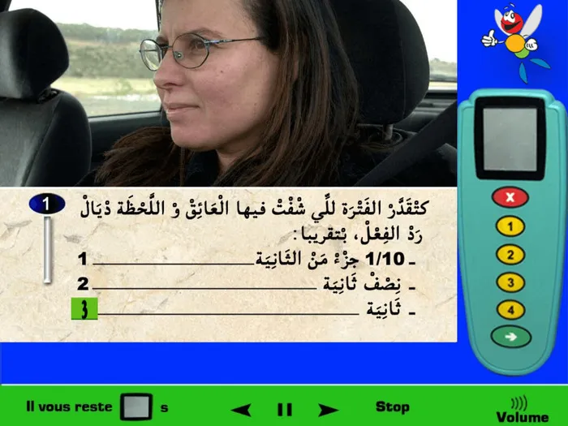
وقت رد الفعل� هو في المتوسط 1 ثانية.
25
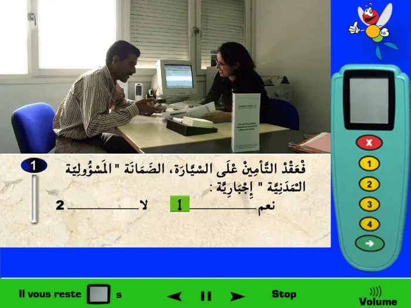
الضمانة المسؤولية المدنية هو أدنى تأمين يمكن للسائق عمله، وهو تأمين إجباري. ويقوم به جميع السائقون.
26
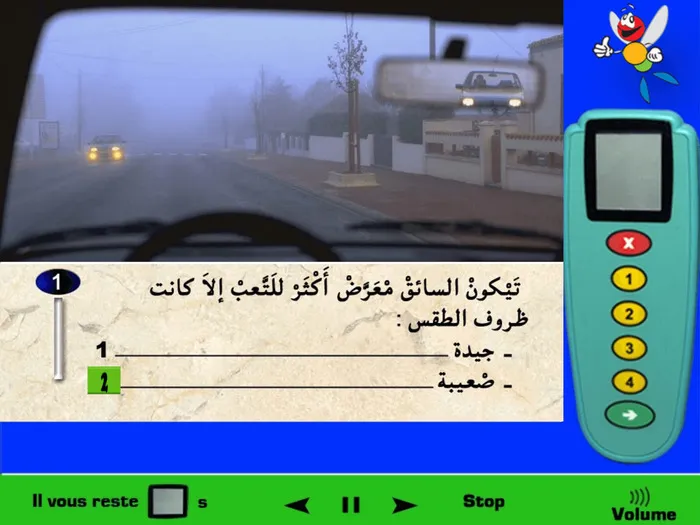
أحوال الطّقس الصّعبة تسبب في التّعب لأن السائق لا تكون عنده الرؤية واضحة وأيضا يبقى منتبه في جميع الأوقات بسبب حالة الطّقس الصّعبة ممّا يسبب في تعبه.
27
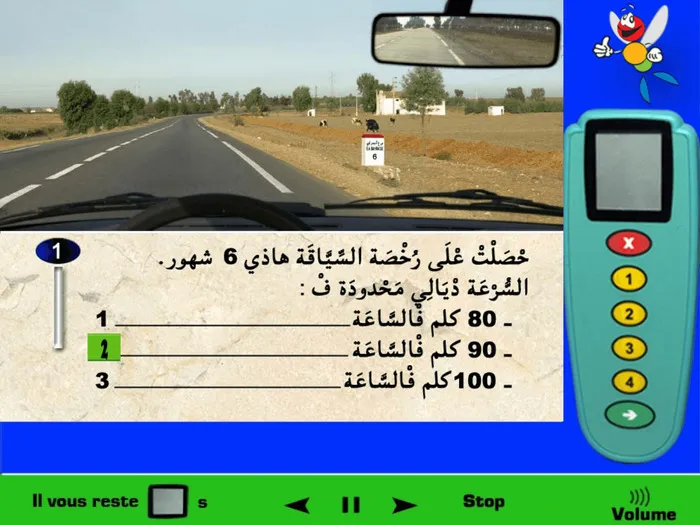
بما أنني حصلت على رخصة السّياقة منذ 6 أشهر فقط فهذا يعني على أنني ما زلت في الفترة الاختبارية والسّرعة القصوى التي يمكنني السّير بها هي 90 كلم في الساعة.
28
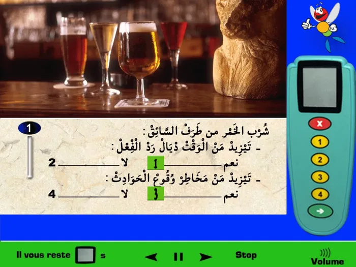
بطبيعة الحال شرب الخمر سوف يؤدي إلى الشعور بالنوم بالنسبة للسائق وبالتالي سوف يكون بطيئ عندما يريد أن يقرّر فعل ما وهو يسوق إذن الخمر يزيد من وقت رد الفعل. وبالتالي حدوث حوادث سير يكون أكثر بسبب طول وقت رد الفعل.
29
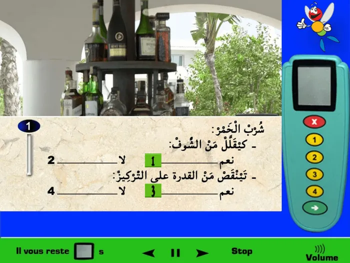
نتيجةً شرب الكحول قد يتعرّض الشخص إلى حدوث ضعف في بصره، وقد يعاني من تحرّك العين حركة سريعة غير طوعية، أو أن تتعرّض عضلات العين إلى الضعف أو الشلل. شرب الخمر يؤدي إلى العديد من الاثار على الشّخص مثل قلة القدرة على التركيز والشعور بالإرهاق والضعف.
30
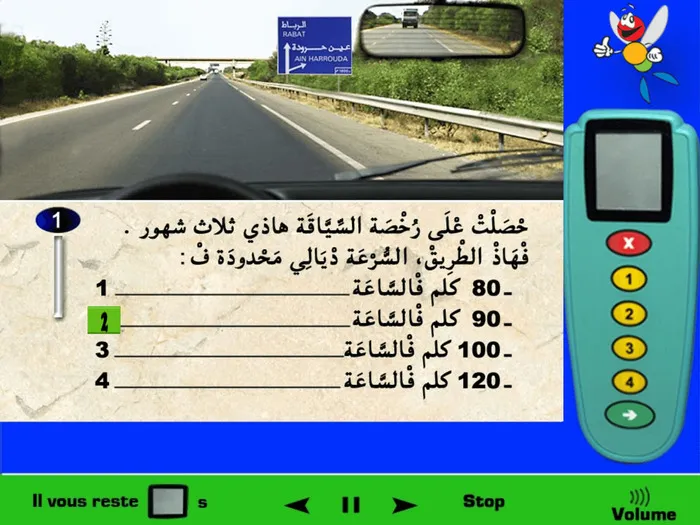
حتى وإن كنت أتواجد في طريق سيّار والتي فيها السرعة القصوى 120 كلم في الساعة فلا يمكنني السّياقة بهذه السرعة لأنني حصلت على رخصة السياقة منذ فقط 3 شهر وهذا يعني أنني مازلت في الفترة الاختبارية والسرعة القصوى التي يمكنني السّير بها هي 90 كلم في الساعة.
31
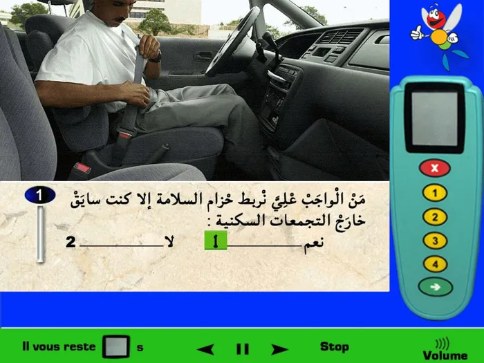
يكون استعمال حزام السلامة من قبل السائق و ركاب المقاعد الأمامية و الخلفية إجباريا خارج التجمعات السكنية.
32
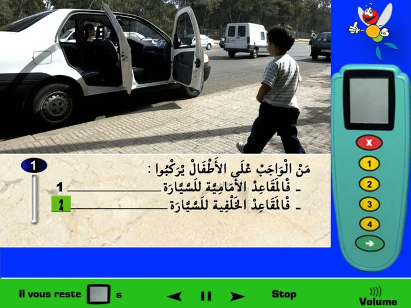
الأطفال الذين تقل أعمارهم عن 10 سنوات , يجب وضعهم في المقاعد الخلفية و تثبيتهم بحزام الأمن وفي حالة عدم وجود حزام الأمن يجب مراقبتهم بعدم فتح الأبواب و النوافذ.
33
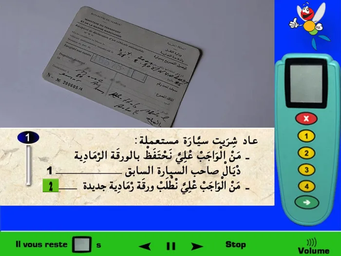
عندما أشتري سيارة مستعملة فمن الواجب عليّ تقديم طلب لتغيير الورقة الرّمادية التي تحمل اسم صاحب السيارة ومعلوماته إلى ورقة رمادية جديدة تحمل إسمي ومعلوماتي.
34
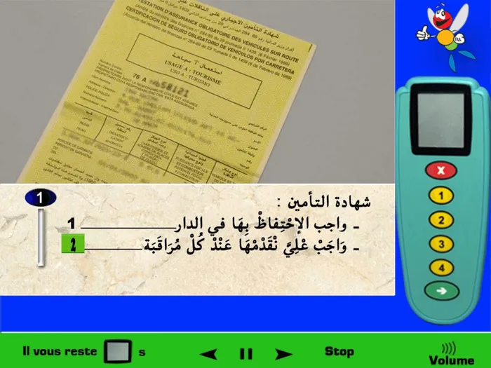
جميع أوراق السيّارة ومن بينها شهادة التّأمين لا يمكن تركها في المنزل، يجب حملها في السيّارة وتقديمها عندما تكون هنالك مراقبة طرقية.
35
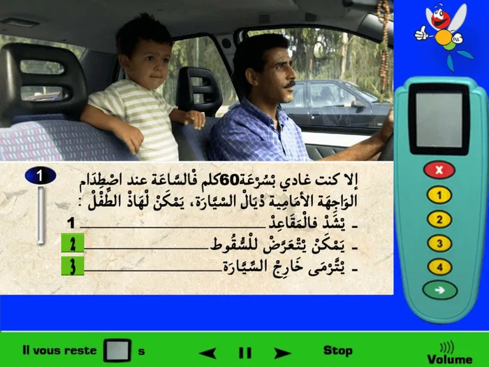
الطفل ليس في وضعية صحيحة، يجب عليه الجلوس بشكل صحيح في المقاعد الخلفية وتثبيته بحزام أمان لو كان موجود. لأن هذه الوضعية فهي خطرة عليه في حالة حدوث اصطدام فيمكن أن يتعرّض الطّفل للسقوط لأنه واقف وبدون حزام أمان وثانيا يمكن أن يرتمي خارج السيّارة لأنه واقف وبدون حزام أمان يحميه ويثبته في مكانه.
36
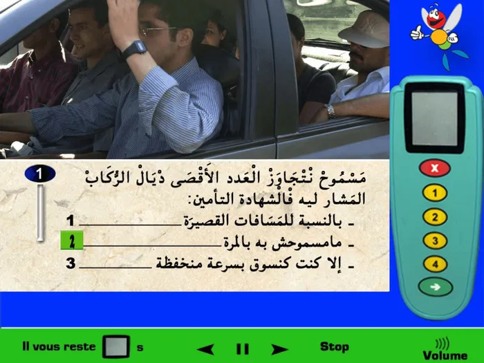
شهادة التامين تشير إلى العدد القانوني للرّكاب المسموح نقله في سيّارة. ولا يمكن تجاوز هذا العدد كيفما كانت الظروف وحتى لو كانت المسافة قصيرة فممنوع ذلك.
37
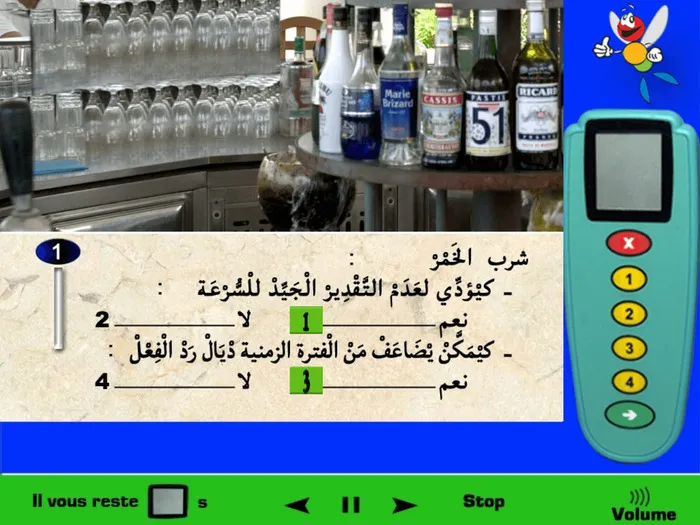
شرب الخمر يؤدي إلى نتائج وخيمة أثناء السّيارة لأنه يضعف التّركيز وبالتّالي عدم التّقدير الجيّد للسرعة أثناء السياقة. وأيضا عند شرب الخمر بيصبح الشّخص بطيئ في اتّخاد قرارات أثناء السّياقة وهذا يعني على الزّيادة في وقت رد الفعل.